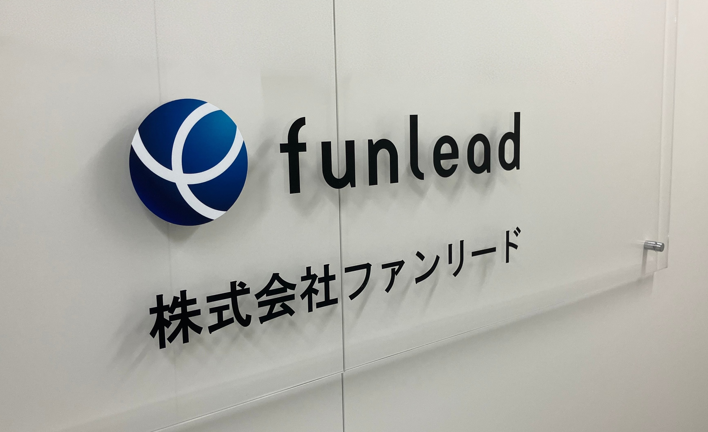
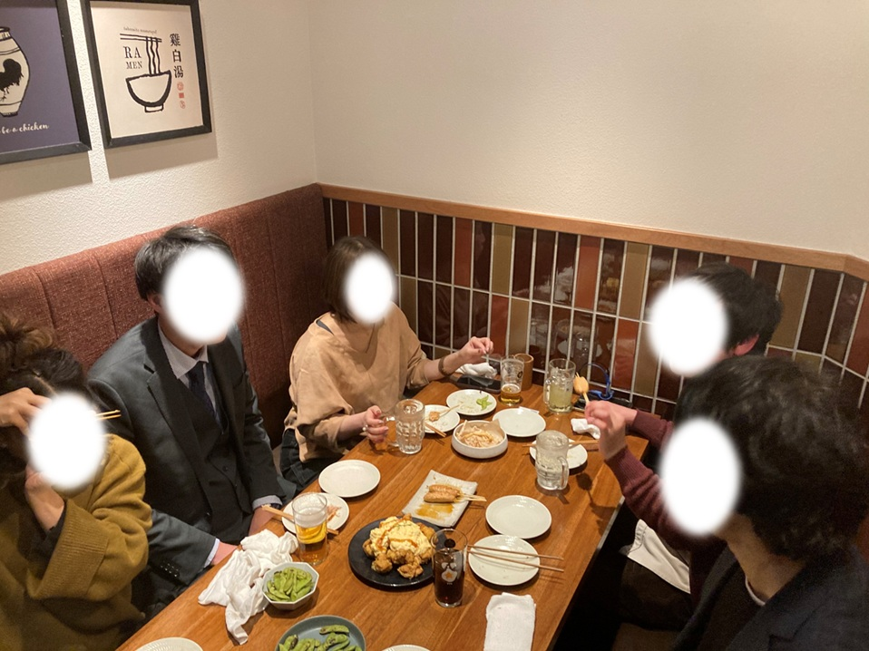
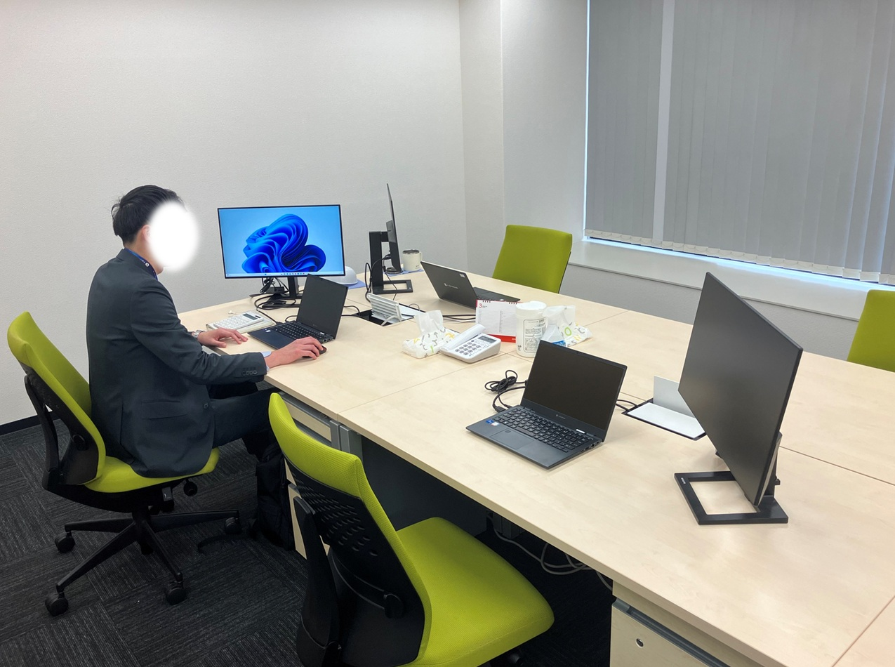
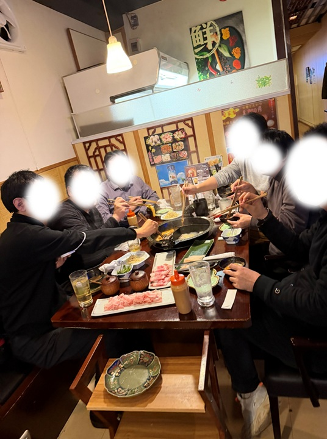
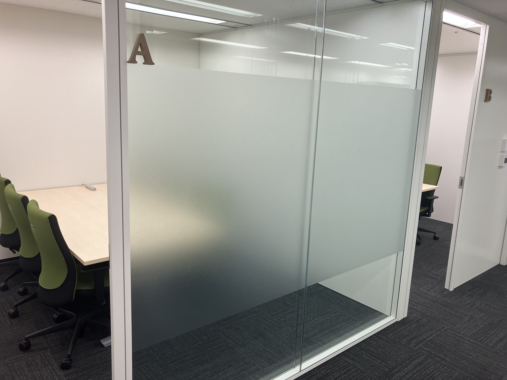

FEATURES
Webアプリ開発・業務システム開発・クラウドインフラなど、名古屋・大阪エリアで200以上の取引先から最適な案件をマッチング。希望を最大限考慮します。
上司が本人の志向・顧客評価・会社方針をもとに目標を一緒に設定。定期的に進捗を確認しながら方向修正を行い、キャリア実現に向けて伴走します。
客先常駐でも上司や営業が定期的にフォロー。困ったときにすぐ相談できる体制が整っているので、安心して業務に集中できます。
まだ若い支社だからこそ、自分の意見や提案が通りやすい環境です。組織づくりにも関われるので、受け身ではなく主体的に働きたい方に最適です。
PROJECTS
多様な業界・技術領域において、エンジニア一人ひとりが主体的に活躍しています
工場設備のデータ収集・分析システム開発に参画。スクラム体制でフロントエンドおよびバックエンド開発を担当し、仕様検討から実装まで幅広く対応。
建物の定期点検業務を効率化するシステムを構築。既存パッケージをベースに、業務要件に応じたカスタマイズ開発を担当。
老朽化したインフラ基盤の刷新プロジェクトにチームリーダーとして参画。約250台の仮想マシン構築を実施し、顧客折衝やベンダー調整など上流工程も担当。
1,000台規模の仮想マシンを対象とした基盤移行プロジェクトに参画。検証・移行計画・リソース調整を行いながら段階的なアップデートを推進。
業務自動化を目的としたRPAシナリオの設計・開発・運用を担当。業務ヒアリングから改善提案まで関わり、サブリーダーとしてチーム運営にも携わる。
新規開発および既存システムの機能改善に参画。基本設計から保守まで一貫して対応し、顧客との要件整理・提案にも関与。
企業向けネットワーク機器の導入をプロジェクトマネージャーとして担当。設計・検証・ドキュメント作成から進行管理まで一貫して推進。
幅広い業界
製造 / 金融 / 通信 / 医療 / 建設 / 物流 など
多様な技術領域
Web / クラウド / インフラ / RPA / ネットワーク / IoT など
幅広い役割
メンバーからPMまで、下流から上流まで幅広くカバー
CAREER PATH
エンジニア一人ひとりの志向に合わせてキャリアを描くことができます
技術を磨き続ける
特定領域のプロフェッショナルとして技術力を深めていく方向。設計・レビュー・技術選定を通じてプロジェクトの品質を支えます。
組織とプロジェクトを動かす
プロジェクトや組織をリードするポジションへ。進行管理・顧客折衝・メンバー育成を通じて、チーム全体の成果を最大化します。
顧客課題の解決に深く関わる
要件定義・提案フェーズを中心に、顧客の業務課題をヒアリングし最適なIT戦略を提案。技術知見をベースにビジネス視点で価値を届けます。
定期面談による
キャリア設計支援
フィードバックを
成長に反映
実践的な
スキル習得
新しい技術領域への
チャレンジを支援
多様なプロジェクトと、自分で選べるキャリア。
あなたの理想に、一歩ずつ近づける環境がここにある。
VOICES
K.T さん
名古屋・大阪支社 / 入社5年目
「風通しの良さが一番の魅力だと感じています。『こんな技術に挑戦したい』『こういう環境で働きたい』といった相談や要望が通りやすく、背中を押してくれる上長が多いので、自分の意志でキャリアを切り拓いていける実感があります。」
S.N さん
名古屋・大阪支社 / 入社3年目
「まだ発展途上の組織だからこそ、技術だけでなく組織マネジメントにもチャレンジできる環境があります。意欲や適性を見て任せてもらえるので、大変さはありますが、その分やりがいを感じながら日々成長できています。」
R.M さん
名古屋・大阪支社 / 入社6年目
「一番の魅力は、自分に合った案件を親身に探してくれるサポート体制です。子育て中で時短勤務を利用していますが、周囲の理解も深く、限られた時間の中でも最大限力を発揮できるよう配慮してもらえるので、育児とキャリアを無理なく両立できています。」
H.I さん
名古屋・大阪支社 / 入社3年目
「自分のスキルより少し上のレベルの案件にも挑戦させてもらえるのが、この会社の良いところです。わからないことがあっても上司や先輩がしっかりフォローしてくれるので、不安よりも成長している実感の方が大きいです。背伸びしながらも安心して前に進める環境だと思います。」
T.M さん
名古屋・大阪支社 / 入社1年目
「前職での経験が活きる案件に就きながらも、新しい領域にチャレンジできる環境が整っています。社内のサポートも丁寧で、業務に集中できるよう細やかに配慮してもらえるので、入社1年目からしっかりとキャリア目標を立てて前に進めている実感があります。」
GALLERY
懇親会や社内イベントなど、普段の雰囲気をお届けします





NUMBERS
月平均残業時間
プライベートも大切にできる働き方
0
時間未満
有給平均取得日数
しっかり休んでしっかり働ける環境
0
日
リモート案件比率（ハイブリッド含む）
時間を有効に活用できる案件が豊富
0
%以上
平均参画期間
長期的な信頼関係のもとで働ける環境
0
年
提案可能企業数
あなたに合う案件が見つかる環境
0
社以上
エンジニア数
組織成長中につきチャンスも豊富
0
名
平均年齢
現場で培った知見を持つメンバーが豊富
0
代中盤
FLOW
応募から内定まで最短2週間。まずはお気軽にご応募ください。
フォームからお気軽にご応募ください。
堅苦しくないフランクな雰囲気で、
リラックスしてお話しいただけます。
入社日は柔軟に調整可能。
案件マッチングを経てスタートします。
※ ご希望の方には、選考前にカジュアル面談（オンライン・30分程度）も実施しています。お気軽にご相談ください。
FAQ
OPEN POSITIONS
名古屋・大阪支社で募集中のポジションです。気になる職種からご応募ください。